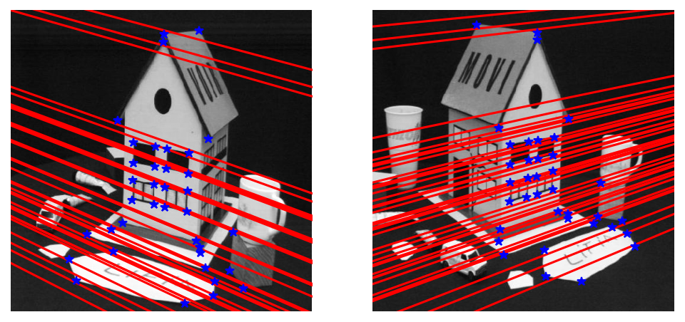
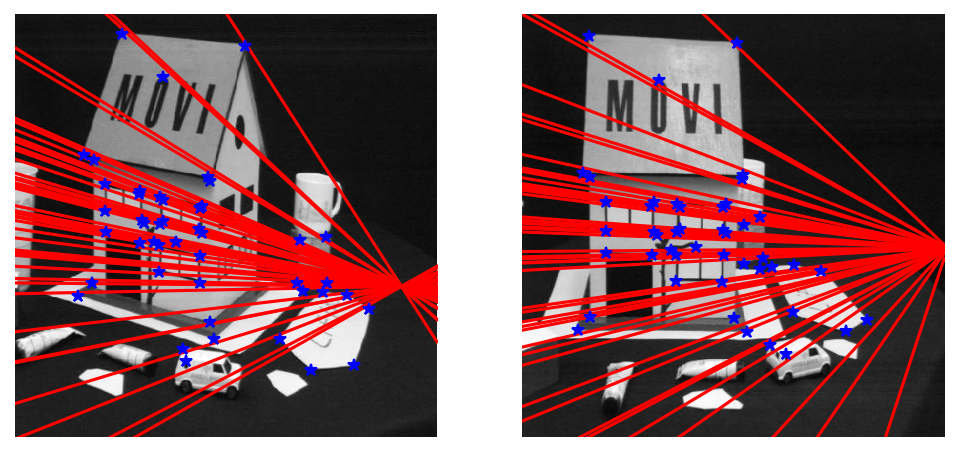
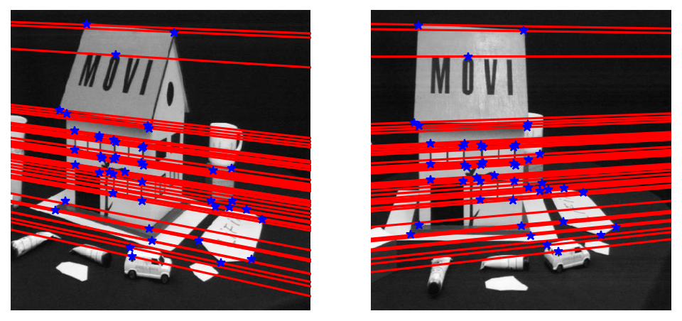
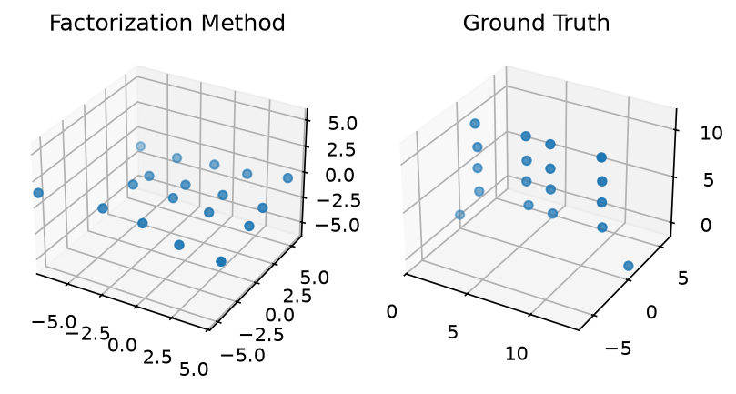
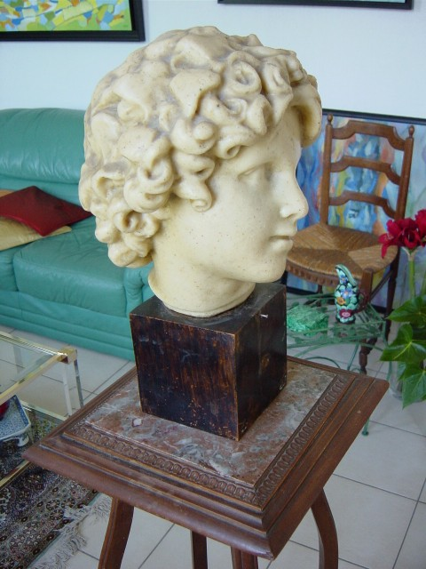
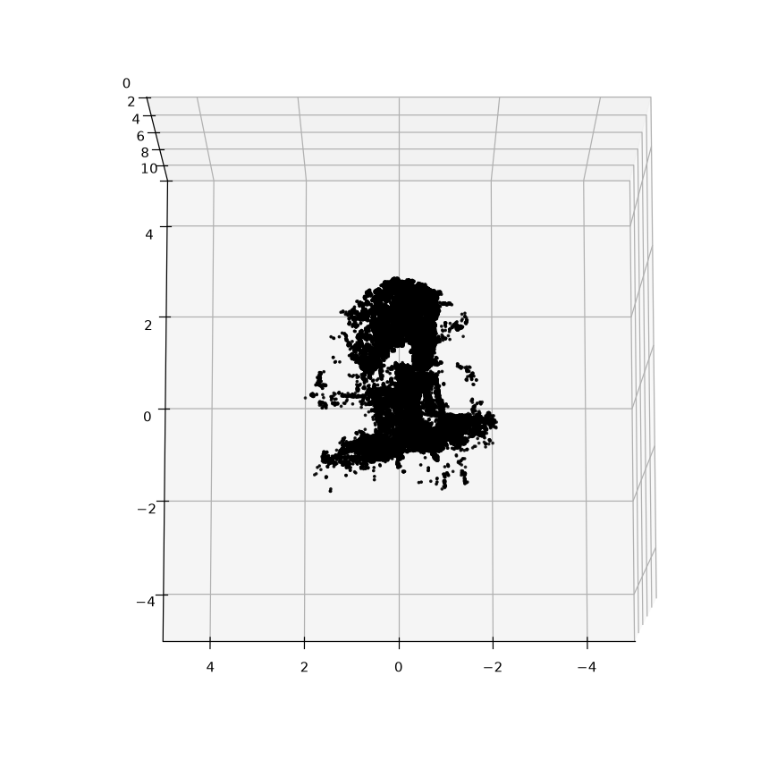
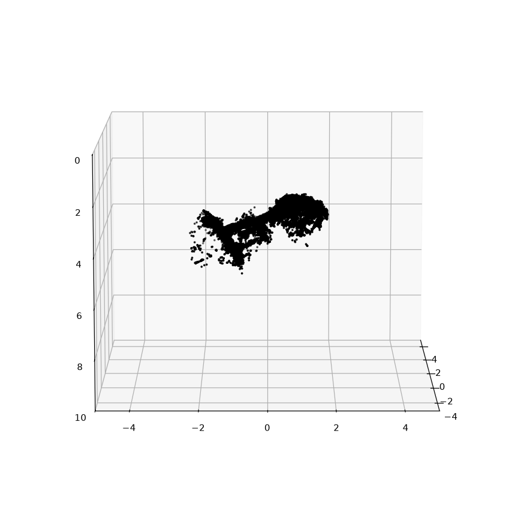

OverviewDeliverables
| Part | Required | Where |
|---|---|---|
| 1(a) code | lls_eight_point_alg() with rank-2 constraint | 1(a–b) |
| 1(b) report | F to ≥ 4 decimals + implementation | 1(a–b) |
| 1(c) code | normalized_eight_point_alg() | 1(c–d) |
| 1(d) report | normalized F to ≥ 4 decimals | 1(c–d) |
| 1(e) code | compute_distance_to_epipolar_lines() | 1(e–f) |
| 1(f) report | implementation of the distance | 1(e–f) |
| 2(a) code | compute_epipole() | 2(a–b) |
| 2(b) code | compute_H() (find_H in the handout) | 2(a–b) |
| 2(c) code | compute_matching_homographies() | 2(c) |
| 2(d) report | rectified pair + why rectification helps | 2(d) |
| 3(a) code | factorization_method() | 3(a–b) |
| 3(b) report | implementation | 3(a–b) |
| 3(c) report | compare with ground truth, explain scale/rotation | 3(c–d) |
| 3(d) report | 4 singular values, why 4, ideal number | 3(c–d) |
| 3(e) report | subset vs ground truth, why less similar | 3(e–f) |
| 3(f) report | new singular values, compare and explain | 3(e–f) |
| 4(a) code | estimate_initial_RT() | 4(a) |
| 4(b) code | linear_estimate_3d_point() | 4(b–d) |
| 4(c) code | reprojection_error(), jacobian() | 4(b–d) |
| 4(d) code | nonlinear_estimate_3d_point() (Gauss–Newton) | 4(b–d) |
| 4(e) code | estimate_RT_from_E() | 4(e) |
| 4(f) report | final statue plot + why a house is harder | 4(f) |
Problem oneFundamental matrix estimation
Estimate F from point correspondences such that \(p'^\top F p = 0\), where \(p\) is a point in image 1 and \(p'\) its match in image 2, both in homogeneous pixel coordinates. Set 1 has 37 correspondences, set 2 has 46.
1(a–b) Linear least-squares eight-point algorithm
Writing \(p = (u, v, 1)\), \(p' = (u', v', 1)\) and expanding \(p'^\top F p = 0\) gives one equation that is linear in the nine entries of F:
- Build W. Stack one row per correspondence into an N × 9 matrix W (N ≥ 8).
- Solve W f = 0 by least squares. To avoid the trivial solution, minimise \(\lVert W\mathbf{f}\rVert\) subject to \(\lVert\mathbf{f}\rVert = 1\). The minimiser is the right singular vector of W with the smallest singular value (last row of \(V^\top\)), reshaped to the 3 × 3 matrix \(\hat F\).
- Enforce rank 2. A true fundamental matrix is singular, but noise makes \(\hat F\) full rank. Take \(\hat F = U\,\mathrm{diag}(\sigma_1,\sigma_2,\sigma_3)\,V^\top\) and return \(F = U\,\mathrm{diag}(\sigma_1,\sigma_2,0)\,V^\top\), the closest rank-2 matrix in Frobenius norm.
SourceCode/p1.py · lls_eight_point_alg()def lls_eight_point_alg(points1, points2):
# Each correspondence p' = (u', v', 1), p = (u, v, 1) gives one linear
# equation p'^T F p = 0 in the 9 entries of F (row-major):
# [u'u, u'v, u', v'u, v'v, v', u, v, 1] . f = 0
u1, v1 = points1[:, 0], points1[:, 1]
u2, v2 = points2[:, 0], points2[:, 1]
ones = np.ones(points1.shape[0])
W = np.column_stack([u2*u1, u2*v1, u2, v2*u1, v2*v1, v2, u1, v1, ones])
# Least-squares solution of W f = 0 with ||f|| = 1: the right singular
# vector associated with the smallest singular value.
_, _, Vt = np.linalg.svd(W)
F_hat = Vt[-1].reshape(3, 3)
# Enforce the rank-two constraint (PDF 1(a)): zero out the smallest
# singular value of F_hat.
U, S, Vt = np.linalg.svd(F_hat)
S[2] = 0
F = U.dot(np.diag(S)).dot(Vt)
return FResulting fundamental matrices (scale is arbitrary; here \(\lVert F\rVert_F = 1\)):
The singular values of \(F_{\text{LLS}}^{\text{set 1}}\) are \(1.0,\ 1.67\times10^{-4},\ 6.7\times10^{-19}\), so the rank-2 constraint holds to machine precision.
1(c–d) Normalized eight-point algorithm
In raw pixels the columns of W differ hugely in magnitude (\(u'u \approx 10^5\) against the constant 1), so W is badly conditioned and the smallest singular vector is dominated by noise. The normalized algorithm fixes this by conditioning the points first:
- Normalize each image separately. Translate the centroid \(\bar{\mathbf{x}}\) to the origin and scale by \(s = \sqrt{2 / \tfrac{1}{N}\sum_i \lVert\mathbf{x}_i - \bar{\mathbf{x}}\rVert^2}\), so the mean squared distance from the origin is 2: $$T = \begin{bmatrix} s & 0 & -s\bar x \\ 0 & s & -s\bar y \\ 0 & 0 & 1 \end{bmatrix},\qquad q_i = T_1 p_i,\quad q'_i = T_2 p'_i$$
- Run the eight-point algorithm of 1(a), including the rank-2 step, on \(q_i, q'_i\) to get \(F_q\).
- De-normalize. Since \(q'^\top F_q q = p'^\top (T_2^\top F_q T_1) p\), return \(F = T_2^\top F_q T_1\), which is still rank 2.
SourceCode/p1.py · normalized_eight_point_alg()def normalized_eight_point_alg(points1, points2):
# Normalizing transform: translate the centroid to the origin and scale
# so that the mean squared distance from the origin is 2.
def normalization_matrix(points):
centroid = points[:, :2].mean(axis=0)
centered = points[:, :2] - centroid
scale = np.sqrt(2.0 / np.mean(np.sum(centered**2, axis=1)))
return np.array([[scale, 0, -scale*centroid[0]],
[0, scale, -scale*centroid[1]],
[0, 0, 1]])
T1 = normalization_matrix(points1)
T2 = normalization_matrix(points2)
q1 = T1.dot(points1.T).T
q2 = T2.dot(points2.T).T
# Run the eight point algorithm (including the rank-two constraint via
# SVD) on the normalized points.
Fq = lls_eight_point_alg(q1, q2)
# De-normalize: q2^T Fq q1 = p2^T (T2^T Fq T1) p1
F = T2.T.dot(Fq).dot(T1)
return FResulting fundamental matrices:
The script's check \(\max_i |p_i'^\top F p_i|\) is \(3.03\times10^{-2}\) (set 1) and \(3.31\times10^{-2}\) (set 2).
1(e–f) Distance to epipolar lines
Implementation. For the points in image 1, each match \(p'_i\) in image 2 defines the epipolar line \(\ell_i = F^\top p'_i = (a_i, b_i, c_i)^\top\) in image 1 (the same lines the plotting code draws). The perpendicular distance from \(p_i = (x_i, y_i, 1)\) to that line, and the returned average, are
All lines are computed at once as the 3 × N matrix \(F^\top P'^\top\). Dividing by \(\sqrt{a^2+b^2}\) makes the result a distance in pixels, independent of the arbitrary scale of F. The distance in image 2 uses the same function with the arguments swapped and \(F^\top\), so the lines become \(F p_i\).
SourceCode/p1.py · compute_distance_to_epipolar_lines()def compute_distance_to_epipolar_lines(points1, points2, F):
# Epipolar lines in image 1 induced by points2: l = F^T p2 = (a, b, c)
lines = F.T.dot(points2.T) # 3 x N
a, b = lines[0], lines[1]
# Point-to-line distance |a x + b y + c| / sqrt(a^2 + b^2), with p1
# in homogeneous coordinates (x, y, 1).
numer = np.abs(np.sum(lines * points1.T, axis=0))
distances = numer / np.sqrt(a**2 + b**2)
average_distance = np.mean(distances)
return average_distance| Set | Method | Mean distance, image 1 (px) | Mean distance, image 2 (px) |
|---|---|---|---|
| Set 1 | LLS eight-point | 28.0257 | 25.1629 |
| Set 1 | Normalized eight-point | 0.8906 | 0.8288 |
| Set 2 | LLS eight-point | 9.7014 | 14.5682 |
| Set 2 | Normalized eight-point | 0.8895 | 0.8917 |
Normalization reduces the error by a factor of 11 to 32: every point lies within about one pixel of its epipolar line. The figures show this. With LLS (left) many points sit visibly off their red lines; with the normalized F (right) the lines pass through the points.



Problem twoMatching homographies for image rectification
Find homographies H₁, H₂ that make all epipolar lines horizontal and put matching points on the same row. Data: set 1 (two 512 × 512 images), with F from the normalized eight-point algorithm.
2(a–b) Epipoles and the homography H₂
compute_epipole(F). With \(p'^\top F p = 0\), every epipolar line \(Fp\) in image 2 passes through the epipole \(e'\), so \(e'^\top F p = 0\) for all p, i.e. \(F^\top e' = 0\). The epipole is the null vector of \(F^\top\): the last right singular vector of \(F^\top\), divided by its third entry to give \([x\ y\ 1]\). The script calls it with \(F^\top\) for image 1 and with F for image 2:
SourceCode/p2.py · compute_epipole()def compute_epipole(F):
# PDF 2(a): the epipole satisfies F^T e = 0, i.e. e spans the null space
# of F^T. Take the right singular vector of F^T for the smallest singular
# value and scale it to homogeneous form [x y 1].
_, _, Vt = np.linalg.svd(F.T)
e = Vt[-1]
epipole = e / e[2]
return epipoleBoth epipoles lie far outside the 512 × 512 images, to the left and right, so within each image the epipolar lines are nearly parallel and fan out only slightly.
compute_H(e, im) (called find_H() in the handout) builds \(H_2 = T^{-1} G R T\) exactly as given:
- T translates the image centre \((\tfrac{w}{2}, \tfrac{h}{2})\) to the origin.
- R rotates the translated epipole \(Te = (e_1, e_2, 1)\) onto the horizontal axis, using \(\alpha = 1\) if \(e_1 \ge 0\), else \(-1\). The rotated epipole is \((f, 0, 1)\) with \(f = \alpha\sqrt{e_1^2 + e_2^2}\).
- G, with \(-1/f\) in the bottom-left entry, sends \((f, 0, 1)\) to the point at infinity \((f, 0, 0)\).
- \(T^{-1}\) moves the origin back.
SourceCode/p2.py · compute_H()def compute_H(e, im):
# PDF 2(b) ("find_H"): H = T^-1 G R T
height, width = im.shape[0], im.shape[1]
# 1. Translate the image center to the origin.
T = np.array([[1, 0, -width / 2.0],
[0, 1, -height / 2.0],
[0, 0, 1]])
# 2. Rotate the translated epipole Te = (e1, e2, 1) onto the
# horizontal axis at (f, 0, 1).
Te = T.dot(e)
Te = Te / Te[2]
e1, e2 = Te[0], Te[1]
alpha = 1.0 if e1 >= 0 else -1.0
norm = np.sqrt(e1**2 + e2**2)
R = np.array([[ alpha * e1 / norm, alpha * e2 / norm, 0],
[-alpha * e2 / norm, alpha * e1 / norm, 0],
[0, 0, 1]])
# 3. Send (f, 0, 1) to the point at infinity (f, 0, 0).
f = R.dot(Te)[0]
G = np.array([[1, 0, 0],
[0, 1, 0],
[-1.0 / f, 0, 1]])
# 4. Undo the translation.
H = np.linalg.inv(T).dot(G).dot(R).dot(T)
return HCheck: \(H_2 e_2 = (1413.91,\ 0,\ 0)\), a point at infinity on the horizontal axis, as required.
2(c) Matching homography H₁
H₁ must also send its epipole to horizontal infinity and, in addition, align matched points as closely as possible: \(\arg\min_{H_1}\sum_i \lVert H_1 p_i - H_2 p'_i\rVert^2\). With \(H_1 = H_A H_2 M\):
- H₂ = compute_H(e₂, im₂) from 2(b).
- M = \([e]_\times F + e v^\top\) with \(v^\top = [1\ 1\ 1]\), where \(e = e_2\) and \([e]_\times = \begin{bmatrix} 0 & -e_z & e_y \\ e_z & 0 & -e_x \\ -e_y & e_x & 0 \end{bmatrix}\) is its cross-product matrix.
- Transform the points: \(\hat p_i = H_2 M p_i\) and \(\hat p'_i = H_2 p'_i\), each divided by its third coordinate.
- Solve W a = b by least squares (37 × 3 system) with rows \([\hat x_i\ \ \hat y_i\ \ 1]\) and \(b_i = \hat x'_i\). Because H₂ and H₂M already give matching rows, H_A only has to correct x.
- Assemble \(H_A = \begin{bmatrix} a_1 & a_2 & a_3 \\ 0 & 1 & 0 \\ 0 & 0 & 1 \end{bmatrix}\) and return \(H_1 = H_A H_2 M\) together with H₂.
SourceCode/p2.py · compute_matching_homographies()def compute_matching_homographies(e2, F, im2, points1, points2):
# PDF 2(c): first H2 maps the epipole e2 to infinity.
H2 = compute_H(e2, im2)
# M = [e]_x F + e v^T, with v^T = [1 1 1]
e_cross = np.array([[0, -e2[2], e2[1]],
[e2[2], 0, -e2[0]],
[-e2[1], e2[0], 0]])
v = np.ones(3)
M = e_cross.dot(F) + np.outer(e2, v)
# Transformed points: p_hat = H2 M p (image 1), p_hat' = H2 p' (image 2)
p_hat = H2.dot(M).dot(points1.T)
p_hat = p_hat / p_hat[2]
p_hat_prime = H2.dot(points2.T)
p_hat_prime = p_hat_prime / p_hat_prime[2]
# Solve W a = b in the least-squares sense, where each row of W is
# [x_hat, y_hat, 1] and b holds the matching x_hat'.
W = np.column_stack([p_hat[0], p_hat[1], np.ones(p_hat.shape[1])])
b = p_hat_prime[0]
a = np.linalg.lstsq(W, b, rcond=None)[0]
H_A = np.array([[a[0], a[1], a[2]],
[0, 1, 0],
[0, 0, 1]])
H1 = H_A.dot(H2).dot(M)
return H1, H2Checks: \(H_1 e_1 \propto (1, 0, 0)\), so the image 1 epipole also goes to horizontal infinity. The mean vertical offset between matched points is 33.52 px before and 0.86 px after rectification (maximum 3.87 px).
2(d) Rectified image pair
Why rectification makes correspondence easier. After rectification the epipolar lines are horizontal and corresponding points share the same row (here to within 0.86 px on average). So for a point \((x, y)\) in one image, its match must lie on row y of the other image:
- 2D search becomes 1D. The match is found by scanning a single row instead of the whole image, with no slanted epipolar line to compute and sample for each point.
- Fewer false matches. Restricting candidates to one row rules out look-alike features elsewhere in the image.
- Disparity is a single number. The horizontal offset \(x - x'\) directly measures the disparity, which is what stereo matching and depth estimation use.
Problem threeThe factorization method
Tomasi–Kanade affine structure from motion: recover the 3D points and the affine cameras from point tracks in m = 2 images (set 1), and compare with the ground-truth 3D points.
3(a–b) Implementation
- Remove translation. Use the (x, y) coordinates only and subtract each image's centroid. Under an affine camera the centroid of the 3D points projects to the centroid of the image points, so centering removes the camera translation.
- Measurement matrix. Stack the centered coordinates into the 2m × n = 4 × 37 matrix $$D = \begin{bmatrix} \tilde x^{(1)}_1 & \cdots & \tilde x^{(1)}_n \\ \tilde y^{(1)}_1 & \cdots & \tilde y^{(1)}_n \\ \tilde x^{(2)}_1 & \cdots & \tilde x^{(2)}_n \\ \tilde y^{(2)}_1 & \cdots & \tilde y^{(2)}_n \end{bmatrix} = M S$$ where M (4 × 3) holds the affine cameras and S (3 × n) the 3D points, so ideally rank(D) = 3.
- SVD. Compute \(D = U\Sigma V^\top\) and print the singular values (used in 3(d) and 3(f)).
- Rank-3 factorization. Keep the three largest singular values and split them evenly: \(M = U_3\Sigma_3^{1/2}\) (motion) and \(S = \Sigma_3^{1/2}V_3^\top\) (structure). \(MS\) is the best rank-3 approximation of D.
SourceCode/p3.py · factorization_method()def factorization_method(points_im1, points_im2):
# Use only the inhomogeneous (x, y) image coordinates.
x1 = points_im1[:, :2]
x2 = points_im2[:, :2]
# 1. Center the points in each image on their centroid; this removes
# the translation component of the affine cameras.
x1_centered = x1 - x1.mean(axis=0)
x2_centered = x2 - x2.mean(axis=0)
# 2. Build the 2m x n measurement matrix D (m = 2 cameras, n points):
# rows are x and y of image 1, then x and y of image 2.
D = np.vstack((x1_centered.T, x2_centered.T))
# 3. SVD of D. In the ideal (noise-free affine) case D has rank 3.
U, S, Vt = np.linalg.svd(D)
print("Singular values of D:", S)
# 4. Keep the rank-3 part and split the singular values evenly:
# D ~= M S, with M = U3 sqrt(W3) (motion, 2m x 3) and
# S = sqrt(W3) V3^T (structure, 3 x n).
U3 = U[:, :3]
W3 = np.diag(S[:3])
V3t = Vt[:3, :]
motion = U3.dot(np.sqrt(W3))
structure = np.sqrt(W3).dot(V3t)
return structure, motion3(c–d) Full point set: comparison and singular values
Loading…
Loading…
3(c) Why the result differs by a scaling and rotation. The two point clouds have the same shape, but different size and orientation. This is because the factorization \(D = MS\) is not unique: for any invertible 3 × 3 matrix Q,
fits the images equally well. The method has no information about the world coordinate frame, so:
- Rotation: the axes of S are the singular vectors chosen by the SVD, not the ground-truth axes.
- Scale: splitting Σ as \(\Sigma^{1/2}\cdot\Sigma^{1/2}\) is an arbitrary choice; any other split rescales S.
- Translation: centering puts the reconstruction's centroid at the origin, while the ground truth is not centered.
In general Q can also contain shear, so the reconstruction is defined only up to an affine transformation. Removing this ambiguity would require metric constraints on the camera rows of M, which the basic method does not impose. To check the shape, I fitted the best 3D affine map from the reconstruction to the ground truth. The remaining RMS error is 1.06, against a ground-truth RMS spread of 11.60 (9%). The residual is due to the cameras being perspective rather than affine.
3(d) Singular values of D:
- Why four non-zero values: D is 4 × 37, so it has at most four singular values. With real data all four are non-zero because the measurements do not fit the rank-3 model exactly: the images come from a perspective camera, which the affine model only approximates, and the point locations contain noise.
- Ideal case: three non-zero values. For noise-free affine cameras \(D = MS\), with M of size 4 × 3 and S of size 3 × n (the scene is three-dimensional), so rank(D) ≤ 3 and \(\sigma_4 = 0\). Here σ₄ is much smaller than σ₃ (27.9 against 184.4), so D is close to rank 3 and keeping three values is justified.
3(e–f) Subset of points
Loading…
Loading…

3(e) Why the result is no longer as similar. The subset's 18 points are almost coplanar. The singular values of the centered ground-truth points are 17.28, 14.18 and only 0.38, compared with 52.28, 41.19 and 23.45 for the full set. This has three consequences:
- Almost no depth information. Points on a plane give a measurement matrix that is essentially rank 2. The images contain almost nothing about the direction perpendicular to the plane.
- The third axis is fitted to noise. Its singular value (7.22) is barely larger than the noise level set by σ₄ = 5.13. The third row of S, which is the out-of-plane coordinate of each point, is therefore mostly noise.
- Noise is amplified into false depth. Because \(S = \Sigma_3^{1/2} V_3^\top\), the out-of-plane spread relative to the in-plane spread is \(\sqrt{7.22/264.54} \approx 0.17\), against about 0.02 in the ground truth. This is why the points look roughly right from one viewpoint but do not lie on a clean plane when the plot is rotated.
The in-plane layout is still recovered. The best affine map from the reconstruction to the ground truth leaves an RMS error of only 0.12 (spread 5.27), because that map can simply flatten the noisy third axis. What is wrong is the out-of-plane coordinate. Having fewer points (18 instead of 37) also means less noise is averaged out.
3(f) New singular values, compared with the full set:
| Points | σ₁ | σ₂ | σ₃ | σ₄ | σ₃ / σ₁ | σ₃ / σ₄ |
|---|---|---|---|---|---|---|
| Full set (37) | 959.59 | 540.48 | 184.43 | 27.92 | 0.192 | 6.6 |
| Subset (18) | 264.54 | 210.06 | 7.22 | 5.13 | 0.027 | 1.4 |
- All values are smaller. This is expected: \(\sum\sigma_i^2 = \lVert D\rVert_F^2\) grows with the number of points and their spread, and the subset has fewer points spread over a smaller area.
- The major change is σ₃ collapsing. Relative to σ₁ it falls from 0.19 to 0.027, and it is now almost equal to σ₄ (ratio 1.4 against 6.6). With the full set there is a clear gap between the three structure values and the noise value. With the subset, D is effectively rank 2: the third (depth) dimension cannot be separated from noise, which explains the poor reconstruction in 3(e).
Problem fourTriangulation in structure from motion
Projective structure from motion on the 5-image statue sequence: recover R, T between cameras from the essential matrix, triangulate points linearly and then nonlinearly, and run the full pipeline.
4(a) The four R, T candidates
The essential matrix is \(E = K^\top F K\) with \(K = \mathrm{diag}(719.5459,\ 719.5459,\ 1)\). With \(E = UDV^\top\):
- Rotation. \(Q_1 = UWV^\top\) and \(Q_2 = UW^\top V^\top\), with \(W = \begin{bmatrix} 0 & -1 & 0 \\ 1 & 0 & 0 \\ 0 & 0 & 1 \end{bmatrix}\). The factorization only guarantees that Q is orthogonal, so \(R_k = \det(Q_k)\,Q_k\) makes \(\det R_k = +1\).
- Translation. \(T = \pm u_3\), the third column of U (the direction is known only up to sign and scale).
- Output. Return the 4 × 3 × 4 tensor \([R_1|u_3],\ [R_1|-u_3],\ [R_2|u_3],\ [R_2|-u_3]\).
SourceCode/p4.py · estimate_initial_RT()def estimate_initial_RT(E):
# PDF 4(a): E = U D V^T = M Q with M = U Z U^T and Q = U W V^T or U W^T V^T
U, _, Vt = np.linalg.svd(E)
W = np.array([[0, -1, 0],
[1, 0, 0],
[0, 0, 1]])
# 1. Q is only guaranteed orthogonal; R = det(Q) Q makes it a rotation.
Q1 = U.dot(W).dot(Vt)
Q2 = U.dot(W.T).dot(Vt)
R1 = np.linalg.det(Q1) * Q1
R2 = np.linalg.det(Q2) * Q2
# 2. T is +/- u3, the third column of U.
T = U[:, 2]
RT = np.array([np.column_stack((R1, T)),
np.column_stack((R1, -T)),
np.column_stack((R2, T)),
np.column_stack((R2, -T))])
return RTThe third candidate, \([R_2\,|\,u_3]\), matches the example RT given in the script to four decimals:
4(b–d) Linear and nonlinear triangulation
4(b) Linear estimate (DLT). For each camera i with matrix \(M_i\) (rows \(m_i^{k\top}\)) and measured point \((p_{i,1}, p_{i,2})\), the constraint \(p_i \times M_i P = 0\) gives two linear rows. Stacking them for all n images gives the 2n × 4 matrix
P is the right singular vector of A with the smallest singular value, divided by its fourth coordinate.
SourceCode/p4.py · linear_estimate_3d_point()def linear_estimate_3d_point(image_points, camera_matrices):
# PDF 4(b): for each image i stack the two rows
# p_i1 m_i^3T - m_i^1T and p_i2 m_i^3T - m_i^2T
# into A, then solve A P = 0 with SVD.
A = []
for p, M in zip(image_points, camera_matrices):
A.append(p[0] * M[2] - M[0])
A.append(p[1] * M[2] - M[1])
A = np.array(A)
_, _, Vt = np.linalg.svd(A)
P = Vt[-1]
point_3d = P[:3] / P[3]
return point_3d4(c) Reprojection error and Jacobian. For camera i, \(y = M_i P\) (with P in homogeneous form), \(p'_i = (y_1/y_3,\ y_2/y_3)\) and \(e_i = p'_i - p_i\). The errors of all K cameras are stacked into a 2K vector. By the quotient rule, each camera contributes two rows of the 2K × 3 Jacobian:
SourceCode/p4.py · reprojection_error()def reprojection_error(point_3d, image_points, camera_matrices):
# PDF 4(c): y = M_i P, p'_i = (y1, y2) / y3, e_i = p'_i - p_i
P = np.append(point_3d, 1)
error = []
for p, M in zip(image_points, camera_matrices):
y = M.dot(P)
p_proj = y[:2] / y[2]
error.extend(p_proj - p)
return np.array(error)SourceCode/p4.py · jacobian()def jacobian(point_3d, camera_matrices):
# PDF 4(c): J is 2K x 3. For camera i with y = M_i P,
# e = (y1/y3, y2/y3) - p => d(y_k/y3)/dP_j = (M[k,j] y3 - y_k M[2,j]) / y3^2
P = np.append(point_3d, 1)
J = []
for M in camera_matrices:
y = M.dot(P)
for k in range(2):
J.append((M[k, :3] * y[2] - y[k] * M[2, :3]) / y[2]**2)
return np.array(J)4(d) Gauss–Newton. Start from the linear estimate and apply exactly 10 updates (no early stopping), as required:
SourceCode/p4.py · nonlinear_estimate_3d_point()def nonlinear_estimate_3d_point(image_points, camera_matrices):
# PDF 4(d): Gauss-Newton initialized with the linear estimate, run for
# exactly 10 iterations (no early termination):
# P_hat = P_hat - (J^T J)^-1 J^T e
point_3d = linear_estimate_3d_point(image_points, camera_matrices)
for _ in range(10):
e = reprojection_error(point_3d, image_points, camera_matrices)
J = jacobian(point_3d, camera_matrices)
point_3d = point_3d - np.linalg.inv(J.T.dot(J)).dot(J.T).dot(e)
return point_3d| Test printed by p4.py | Result | Expected |
|---|---|---|
| 4(b) |estimated − expected 3D point|, summed | 0.0029 | near zero |
| 4(c) reprojection error difference | 8.30 × 10⁻⁷ | near zero |
| 4(c) Jacobian difference | 1.82 × 10⁻⁸ | near zero |
| 4(d) reprojection error, linear → nonlinear | 98.735 → 95.595 | nonlinear lower |
The 4(b) difference is not exactly zero because the example RT and the expected point are printed to only four decimals. Gauss–Newton lowers the reprojection error because it minimises the image-space error directly, whereas the DLT minimises an algebraic error.
4(e) Choosing the correct R, T
- Triangulate. For each of the four candidates, set \(M_1 = K[I\,|\,0]\) and \(M_2 = K[R\,|\,T]\), and triangulate every correspondence with the nonlinear estimate from 4(d). The resulting point X is in camera 1's frame.
- Test depth in both cameras. Transform the point into camera 2's frame with \(X_2 = RX + T\). The point is in front of both cameras if \(X_z > 0\) and \(X_{2,z} > 0\).
- Pick the best candidate. Return the R, T with the most points in front of both cameras. The other three candidates put the points behind one or both cameras.
SourceCode/p4.py · estimate_RT_from_E()def estimate_RT_from_E(E, image_points, K):
candidate_RTs = estimate_initial_RT(E)
# Camera 1 is the reference frame: M1 = K [I | 0]
M1 = K.dot(np.hstack((np.eye(3), np.zeros((3, 1)))))
best_count = -1
best_RT = None
for RT in candidate_RTs:
camera_matrices = np.array([M1, K.dot(RT)])
R, T = RT[:, :3], RT[:, 3]
count = 0
for points in image_points:
# 1. Triangulate the 3D point (in camera 1's frame) for this R, T.
X = nonlinear_estimate_3d_point(points, camera_matrices)
# 2. Transform it into camera 2's frame and test depth in both.
X2 = R.dot(X) + T
if X[2] > 0 and X2[2] > 0:
count += 1
# The correct R, T puts the most points in front of both cameras.
if count > best_count:
best_count = count
best_RT = RT
return best_RTResult: the selected RT is \([R_2\,|\,u_3]\), identical to the example RT shown in 4(a). The decision is clear-cut. On the 50 matches of the first statue image pair, \([R_2\,|\,u_3]\) puts 50 of 50 points in front of both cameras, and each of the other three candidates puts 0 of 50.
4(f) Statue reconstruction
With run_pipeline = True, the pipeline in p4.py and sfm_utils.py runs in four
steps:
- For each of the 4 consecutive image pairs, it estimates R, T with
estimate_RT_from_Eand triangulates the matches. - It refines each pair with bundle adjustment.
- It merges all pairs into one set of cameras.
- It triangulates the dense matches between consecutive cameras with
nonlinear_estimate_3d_point. The result is 66,385 points.


Loading point cloud…

Why a larger scene, such as a house, is harder to reconstruct than the statue:
- Many more views, and drift. The statue is covered by 5 photos over a small arc. A house needs many images around and inside it. Chaining pairwise R, T estimates accumulates error (drift), and the loop around the building must be closed consistently, which requires a global bundle adjustment over far more cameras and points. The cost also grows quickly, and this Python pipeline already takes noticeable time for the statue.
- Occlusion and short tracks. Walls, corners and rooms hide most of the scene from any one viewpoint, so each point is seen in only a few images and is triangulated less reliably.
- Hard surfaces to match. Houses have large textureless areas (painted walls), repetitive patterns (bricks, windows, tiles) and reflective or transparent glass. These produce few correct correspondences and many wrong ones.
- Large depth range. Distant parts are seen with small parallax and are triangulated poorly. Nearby parts change appearance strongly between views, which makes them hard to match.
- Planar, changing scenes. Dominant planar façades make F and E estimation ill-conditioned (coplanar points are a degenerate case for the eight-point algorithm). Outdoors, lighting changes and moving objects (trees, cars, people) break the static-scene assumption.